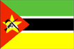
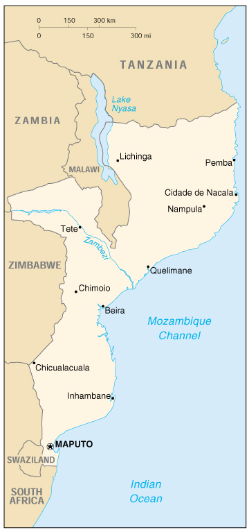

{kind=link}


| Mozambique |  |
|
|  | |
| Introduction |
Background: Almost five centuries as a Portuguese colony came to a close with independence in 1975. Large-scale emigration by whites, economic dependence on South Africa, a severe drought, and a prolonged civil war hindered the country's development. The ruling party formally abandoned Marxism in 1989, and a new constitution the following year provided for multiparty elections and a free market economy. A UN-negotiated peace agreement with rebel forces ended the fighting in 1992.
| Geography |
Location: Southern Africa, bordering the Mozambique Channel, between South Africa and Tanzania
Geographic coordinates: 18 15 S, 35 00 E
Map references: Africa
Area:
total:
801,590 sq km
land:
784,090 sq km
water:
17,500 sq km
Area - comparative: slightly less than twice the size of California
Land boundaries:
total:
4,571 km
border countries:
Malawi 1,569 km, South Africa 491 km, Swaziland 105 km, Tanzania 756 km, Zambia 419 km, Zimbabwe 1,231 km
Coastline: 2,470 km
Maritime claims:
exclusive economic zone:
200 nm
territorial sea:
12 nm
Climate: tropical to subtropical
Terrain: mostly coastal lowlands, uplands in center, high plateaus in northwest, mountains in west
Elevation extremes:
lowest point:
Indian Ocean 0 m
highest point:
Monte Binga 2,436 m
Natural resources: coal, titanium, natural gas, hydropower
Land use:
arable land:
4%
permanent crops:
0%
permanent pastures:
56%
forests and woodland:
18%
other:
22% (1993 est.)
Irrigated land: 1,180 sq km (1993 est.)
Natural hazards: severe droughts and floods occur in central and southern provinces; devastating cyclones
Environment - current issues: a long civil war and recurrent drought in the hinterlands have resulted in increased migration of the population to urban and coastal areas with adverse environmental consequences; desertification; pollution of surface and coastal waters
Environment - international agreements:
party to:
Biodiversity, Climate Change, Desertification, Endangered Species, Hazardous Wastes, Law of the Sea, Ozone Layer Protection
signed, but not ratified:
none of the selected agreements
| People |
Population:
19,104,696
note:
estimates for this country explicitly take into account the effects of excess mortality due to AIDS; this can result in lower life expectancy, higher infant mortality and death rates, lower population and growth rates, and changes in the distribution of population by age and sex than would otherwise be expected; the 1997 Mozambican census reported a population of 16,099,246 (July 2000 est.)
Age structure:
0-14 years:
43% (male 4,079,240; female 4,122,578)
15-64 years:
54% (male 5,123,178; female 5,262,618)
65 years and over:
3% (male 215,412; female 301,670) (2000 est.)
Population growth rate: 1.47% (2000 est.)
Birth rate: 37.99 births/1,000 population (2000 est.)
Death rate: 23.29 deaths/1,000 population (2000 est.)
Net migration rate: 0 migrant(s)/1,000 population (2000 est.)
Sex ratio:
at birth:
1.03 male(s)/female
under 15 years:
0.99 male(s)/female
15-64 years:
0.97 male(s)/female
65 years and over:
0.71 male(s)/female
total population:
0.97 male(s)/female (2000 est.)
Infant mortality rate: 139.86 deaths/1,000 live births (2000 est.)
Life expectancy at birth:
total population:
37.52 years
male:
38.34 years
female:
36.68 years (2000 est.)
Total fertility rate: 4.93 children born/woman (2000 est.)
Nationality:
noun:
Mozambican(s)
adjective:
Mozambican
Ethnic groups: indigenous tribal groups 99.66% (Shangaan, Chokwe, Manyika, Sena, Makua, and others), Europeans 0.06%, Euro-Africans 0.2%, Indians 0.08%
Religions: indigenous beliefs 50%, Christian 30%, Muslim 20%
Languages: Portuguese (official), indigenous dialects
Literacy:
definition:
age 15 and over can read and write
total population:
40.1%
male:
57.7%
female:
23.3% (1995 est.)
| Government |
Country name:
conventional long form:
Republic of Mozambique
conventional short form:
Mozambique
local long form:
Republica de Mocambique
local short form:
Mocambique
Data code: MZ
Government type: republic
Capital: Maputo
Administrative divisions: 10 provinces (provincias, singular - provincia); Cabo Delgado, Gaza, Inhambane, Manica, Maputo, Nampula, Niassa, Sofala, Tete, Zambezia
Independence: 25 June 1975 (from Portugal)
National holiday: Independence Day, 25 June (1975)
Constitution: 30 November 1990
Legal system: based on Portuguese civil law system and customary law
Suffrage: 18 years of age; universal
Executive branch:
chief of state:
President Joaquim Alberto CHISSANO (since 6 November 1986); note - before being popularly elected, CHISSANO was elected president by Frelimo's Central Committee 4 November 1986 (reelected by the Committee 30 July 1989)
head of government:
Prime Minister Pascoal MOCUMBI (since NA December 1994)
cabinet:
Cabinet
elections:
president elected by popular vote for a five-year term; election last held 3-4 December 1999 (next to be held NA 2004); prime minister appointed by the president
election results:
Joaquim Alberto CHISSANO reelected president; percent of vote - Joaquim Alberto CHISSANO 52.29%, Afonso DHLAKAMA 47.71%
Legislative branch:
unicameral Assembly of the Republic or Assembleia da Republica (250 seats; members are directly elected by popular vote on a secret ballot to serve five-year terms)
elections:
last held 3-5 December 1999 (next to be held NA 2004)
election results:
percent of vote by party - Frelimo 48.54%, Renamo-UE 38.81%; seats by party - Frelimo 133, Renamo-UE 117
note:
Renamo-UE ran as a multiparty coalition; none of the other opposition parties received the 5% required to win parliamentary seats
Judicial branch: Supreme Court, judges appointed by the president and judges elected by the Assembly
Political parties and leaders: Front for the Liberation of Mozambique (Frente de Liberatacao de Mocambique) or Frelimo [Joaquim Alberto CHISSANO, chairman]; Mozambique National Resistance - Electoral Union (Resistencia Nacional Mocambicana - Uniao Eleitoral) or Renamo-UE [Afonso DHLAKAMA, president]
International organization participation: ACP, AfDB, C, CCC, ECA, FAO, G-77, IBRD, ICAO, ICFTU, ICRM, IDA, IDB, IFAD, IFC, IFRCS, IHO, ILO, IMF, IMO, Inmarsat, Intelsat, Interpol, IOC, IOM (observer), ISO (correspondent), ITU, NAM, OAU, OIC, SADC, UN, UNCTAD, UNESCO, UNIDO, UNTAET, UPU, WFTU, WHO, WIPO, WMO, WToO, WTrO
Diplomatic representation in the US:
chief of mission:
Ambassador Marcos Geraldo NAMASHULUA
chancery:
Suite 570, 1990 M Street NW, Washington, DC 20036
telephone:
[1] (202) 293-7146
FAX:
[1] (202) 835-0245
Diplomatic representation from the US:
chief of mission:
Ambassador Bryan Dean CURRAN
embassy:
Avenida Kenneth Kuanda 193, Maputo
mailing address:
P. O. Box 783, Maputo
telephone:
[258] (1) 492797
FAX:
[258] (1) 490114
Flag description: three equal horizontal bands of green (top), black, and yellow with a red isosceles triangle based on the hoist side; the black band is edged in white; centered in the triangle is a yellow five-pointed star bearing a crossed rifle and hoe in black superimposed on an open white book
| Economy |
Economy - overview: Before the peace accord of October 1992, Mozambique's economy was devastated by a protracted civil war and socialist mismanagement. In 1994, it ranked as one of the poorest countries in the world. Since then, Mozambique has undertaken a series of economic reforms. Almost all aspects of the economy have been liberalized to some extent. More than 900 state enterprises have been privatized. Pending are tax and much needed commercial code reform, as well as greater private sector involvement in the transportation, telecommunications, and energy sectors. Since 1996, inflation has been low and foreign exchange rates stable. Albeit from a small base, Mozambique's economy grew at an annual 10% rate in 1997-99, one of the highest growth rates in the world. Still, the country depends on foreign assistance to balance the budget and to pay for a trade imbalance in which imports outnumber exports by five to one or more. The medium-term outlook for the country looks bright, as trade and transportation links to South Africa and the rest of the region are expected to improve and sizable foreign investments materialize. Among these investments are metal production (aluminum, steel), natural gas, power generation, agriculture (cotton, sugar), fishing, timber, and transportation services. Additional exports in these areas should bring in needed foreign exchange. In addition, Mozambique is on track to receive a formal cancellation of a large portion of its external debt through a World Bank initiative.
GDP: purchasing power parity - $18.7 billion (1999 est.)
GDP - real growth rate: 10% (1999 est.)
GDP - per capita: purchasing power parity - $1,000 (1999 est.)
GDP - composition by sector:
agriculture:
34%
industry:
18%
services:
48% (1998 est.)
Population below poverty line: NA%
Household income or consumption by percentage share:
lowest 10%:
NA%
highest 10%:
NA%
Inflation rate (consumer prices): 4% (1999 est.)
Labor force: NA
Labor force - by occupation: agriculture 81%, industry 6%, services 13% (1997 est.)
Unemployment rate: NA%
Budget:
revenues:
$402 million
expenditures:
$799 million, including capital expenditures of $NA (1997 est.)
Industries: food, beverages, chemicals (fertilizer, soap, paints), petroleum products, textiles, cement, glass, asbestos, tobacco
Industrial production growth rate: 39% (1997)
Electricity - production: 1.2 billion kWh (1998)
Electricity - production by source:
fossil fuel:
25%
hydro:
75%
nuclear:
0%
other:
0% (1998)
Electricity - consumption: 1.018 billion kWh (1998)
Electricity - exports: 483 million kWh (1998)
Electricity - imports: 385 million kWh (1998)
Agriculture - products: cotton, cashew nuts, sugarcane, tea, cassava (tapioca), corn, rice, tropical fruits; beef, poultry
Exports: $300 million (f.o.b., 1999 est.)
Exports - commodities: prawns 40%, cashews, cotton, sugar, copra, citrus, coconuts, timber (1997)
Exports - partners: Spain 17%, South Africa 16%, Portugal 12%, US 10%, Japan, Malawi, India, Zimbabwe (1996 est.)
Imports: $1.6 billion (c.i.f., 1999 est.)
Imports - commodities: food, clothing, farm equipment, petroleum, transport equipment (1997)
Imports - partners: South Africa 55%, Zimbabwe 7%, Saudi Arabia 5%, Portugal 4%, US, Japan, India (1996 est.)
Debt - external: $4.8 billion (1999)
Economic aid - recipient: $1.115 billion (1995)
Currency: 1 metical (Mt) = 100 centavos
Exchange rates: meticais (Mt) per US$1 - 13,392.0 (January 2000), 12,775.1 (1999), 11,874.6 (1998), 11.543.6 (1997), 11,293.8 (1996), 9,024.3 (1995)
Fiscal year: calendar year
| Communications |
Telephones - main lines in use: 60,000 (1995)
Telephones - mobile cellular: NA
Telephone system:
fair system of tropospheric scatter, open-wire lines, and microwave radio relay
domestic:
microwave radio relay and tropospheric scatter
international:
satellite earth stations - 5 Intelsat (2 Atlantic Ocean and 3 Indian Ocean)
Radio broadcast stations: AM 14, FM 4, shortwave 17 (1998)
Radios: 730,000 (1997)
Television broadcast stations: 1 (1997)
Televisions: 90,000 (1997)
Internet Service Providers (ISPs): 2 (1999)
| Transportation |
Railways:
total:
3,131 km
narrow gauge:
2,988 km 1.067-m gauge; 143 km 0.762-m gauge (1994)
Highways:
total:
30,400 km
paved:
5,685 km
unpaved:
24,715 km (1996 est.)
Waterways: about 3,750 km of navigable routes
Pipelines:
crude oil 306 km; petroleum products 289 km
note:
not operating
Ports and harbors: Beira, Inhambane, Maputo, Nacala, Pemba, Quelimane
Merchant marine:
total:
3 ships (1,000 GRT or over) totaling 4,125 GRT/7,024 DWT
ships by type:
cargo 3 (1999 est.)
Airports: 170 (1999 est.)
Airports - with paved runways:
total:
22
over 3,047 m:
1
2,438 to 3,047 m:
3
1,524 to 2,437 m:
10
914 to 1,523 m:
4
under 914 m:
4 (1999 est.)
Airports - with unpaved runways:
total:
148
2,438 to 3,047 m:
1
1,524 to 2,437 m:
16
914 to 1,523 m:
39
under 914 m:
92 (1999 est.)
| Military |
Military branches: Army, Naval Command, Air and Air Defense Forces, Militia
Military manpower - availability:
males age 15-49:
4,536,132 (2000 est.)
Military manpower - fit for military service:
males age 15-49:
2,617,720 (2000 est.)
Military expenditures - dollar figure: $72 million (FY97)
Military expenditures - percent of GDP: 4.7% (FY97)
| Transnational Issues |
Disputes - international: none
Illicit drugs: Southern African transit hub for South American cocaine probably destined for the European and US markets; producer of hashish and methaqualone